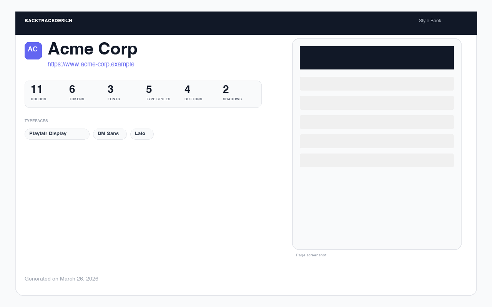
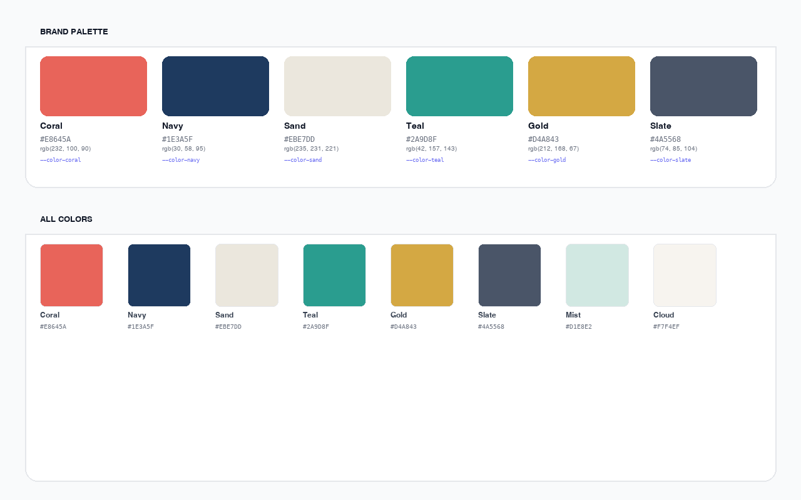
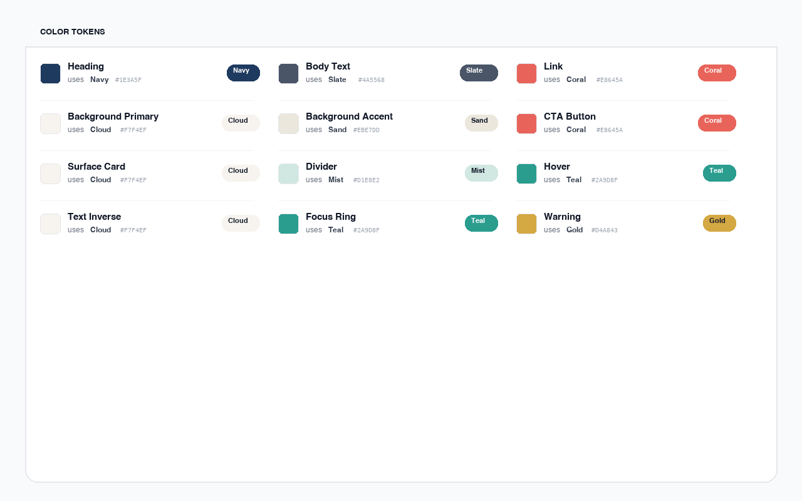
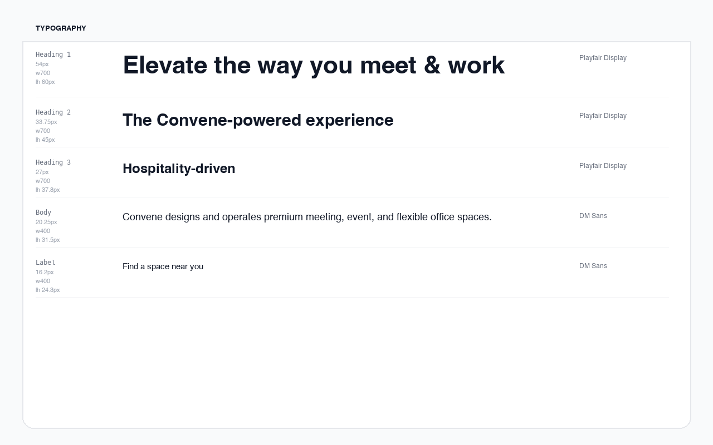
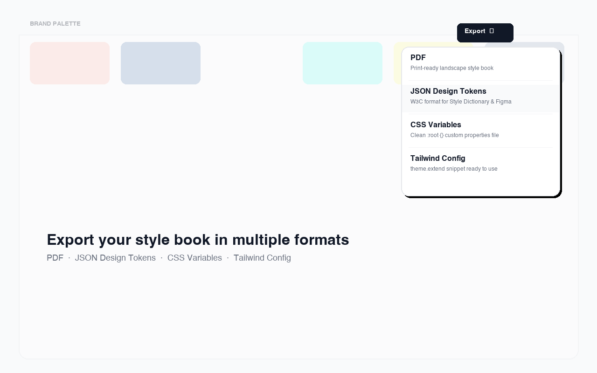

BacktraceDesign reverse-engineers colors, typography, design tokens, and component styles into a comprehensive, exportable style book.

Every section is presentation-ready — export as a PDF and include it directly in a pitch deck.

Brand palette with inferred roles, plus every color named from CSS variables

Semantic token mappings — Heading uses Navy, Link uses Coral, etc.

Every text style rendered in the actual site fonts with full metrics

Four formats: PDF, JSON Design Tokens, CSS Variables, Tailwind Config
No setup, no API keys. Just right-click and extract.
Select "Extract styles from this page" from the context menu on any website.
BacktraceDesign scans elements, stylesheets, CSS variables, and design tokens to build a complete picture.
A formatted style book opens instantly. Export as PDF, JSON Tokens, CSS Variables, or Tailwind Config.
Captures every visual detail and organizes it into a readable, shareable document.
Automatically curates brand colors from backgrounds, text, borders, and stylesheets with semantic role detection.
Resolves var() chains, reads @layer rules, and maps semantic tokens like "Heading" to their base color.
Captures font families, sizes, weights, line heights, and letter spacing for every heading and body style.
Extracts every button variant and link style with live-rendered previews showing padding, borders, and shadows.
Identifies recurring spacing values, border radii, and box shadows used throughout the page.
Export as PDF for presentations, JSON design tokens for pipelines, CSS variables, or a Tailwind config file.
Choose the format that fits your workflow.
Landscape print-ready document. One section per page, perfect for handoffs and pitch decks.
W3C Design Tokens format. Compatible with Style Dictionary, Figma Tokens, and token pipelines.
Clean custom properties file with colors, typography, spacing, radii, and shadows organized by category.
Ready-to-use theme.extend snippet with the extracted palette, fonts, and spacing scale.